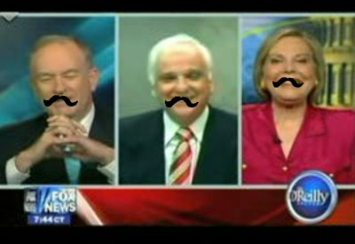
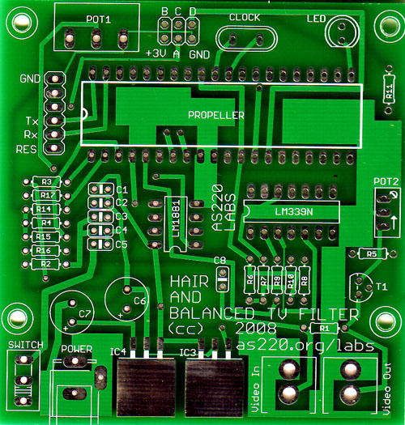

The Hair and Balanced TV Filter taps into the composite video input to your TV, detects whether you are watching talking head pundits or newscasters, then draws moustaches on the faces on the screen. The TV filter is a new kind of hardware shield that helps users take control of their screen. This project is based on the Parallax Propeller processor.
